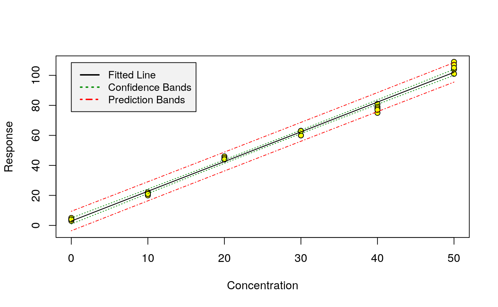
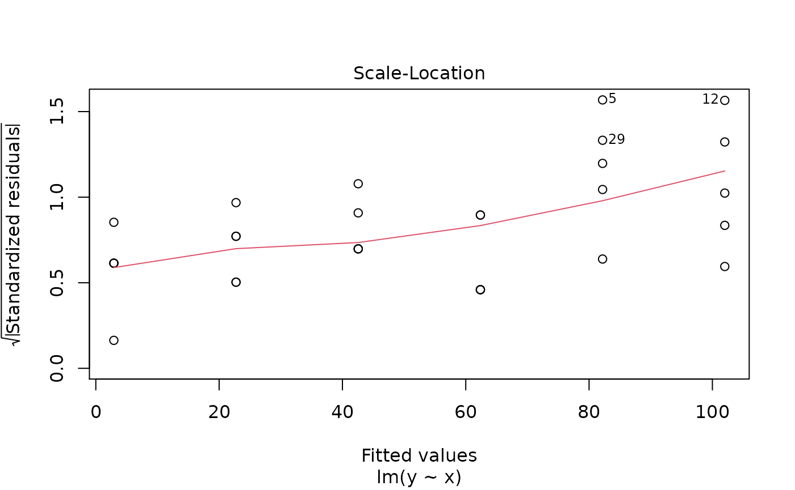

chemCal.RmdThe chemCal package was first designed in the course of a lecture and lab course on “Analytics of Organic Trace Contaminants” at the University of Bremen from October to December 2004. In the fall 2005, an email exchange with Ron Wehrens led to the belief that it would be desirable to implement the inverse prediction method given in Massart et al. (1997) since it also covers the case of weighted regression. Studies of the IUPAC orange book and of DIN 32645 (equivalent to ISO 11843), publications by Currie (1997) and the Analytical Method Committee of the Royal Society of Chemistry (Analytical Methods Committee 1989) and a nice paper by Castells and Castillo (Castells and Castillo 2000) provided some further understanding of the matter.
At the moment, the package consists of four functions (calplot, lod, loq and inverse.predict), working on univariate linear models of class lm or rlm, plus several datasets for validation.
A bug report and the following e-mail exchange on the r-devel mailing list about prediction intervals from weighted regression entailed some further studies on this subject. However, I did not encounter any proof or explanation of the formula cited below yet, so I can’t really confirm that Massart’s method is correct.
In fact, in June 2018 I was made aware of the fact that the inverse prediction method implemented in chemCal version 0.1.37 and before did not take the variance of replicate calibration standards about their means into account, nor the number of replicates when calculating the degrees of freedom. Thanks to PhD student Anna Burniol Figols for reporting this issue!
As a consequence, I rewrote inverse.predict not to automatically work with the mean responses for each calibration standard any more. The example calculations from Massart et al. (1997) can still be reproduced when the regression model is calculated using the means of the calibration data as shown below.
When calibrating an analytical method, the first task is to generate a suitable model. If we want to use the chemCal functions, we have to restrict ourselves to univariate, possibly weighted, linear regression so far.
Once such a model has been created, the calibration can be graphically shown by using the calplot function:
library(chemCal)
m0 <- lm(y ~ x, data = massart97ex3)
calplot(m0)
As we can see, the scatter increases with increasing x. This is also illustrated by one of the diagnostic plots for linear models provided by R:
plot(m0, which=3)
Therefore, in Example 8 in Massart et al. (1997), weighted regression is proposed which can be reproduced by the following code. Note that we are building the model on the mean values for each standard in order to be able to reproduce the results given in the book with the current version of chemCal.
weights <- with(massart97ex3, {
yx <- split(y, x)
ybar <- sapply(yx, mean)
s <- round(sapply(yx, sd), digits = 2)
w <- round(1 / (s^2), digits = 3)
})
massart97ex3.means <- aggregate(y ~ x, massart97ex3, mean)
m <- lm(y ~ x, w = weights, data = massart97ex3.means)If we now want to predict a new x value from measured y values, we use the inverse.predict function:
inverse.predict(m, 15, ws=1.67)## $Prediction
## [1] 5.865367
##
## $`Standard Error`
## [1] 0.8926109
##
## $Confidence
## [1] 2.478285
##
## $`Confidence Limits`
## [1] 3.387082 8.343652inverse.predict(m, 90, ws = 0.145)## $Prediction
## [1] 44.06025
##
## $`Standard Error`
## [1] 2.829162
##
## $Confidence
## [1] 7.855012
##
## $`Confidence Limits`
## [1] 36.20523 51.91526The weight ws assigned to the measured y value has to be given by the user in the case of weighted regression, or alternatively, the approximate variance var.s at this location.
inverse.predict
Equation 8.28 in Massart et al. (1997) gives a general equation for predicting the standard error \(s_{\hat{x_s}}\) for an \(x\) value predicted from measurements of \(y\) according to the linear calibration function \(y = b_0 + b_1 \cdot x\):
\[\begin{equation} s_{\hat{x_s}} = \frac{s_e}{b_1} \sqrt{\frac{1}{w_s m} + \frac{1}{\sum{w_i}} + \frac{(\bar{y_s} - \bar{y_w})^2 \sum{w_i}} {{b_1}^2 \left( \sum{w_i} \sum{w_i {x_i}^2} - {\left( \sum{ w_i x_i } \right)}^2 \right) }} \end{equation}\]with
\[\begin{equation} s_e = \sqrt{ \frac{\sum w_i (y_i - \hat{y_i})^2}{n - 2}} \end{equation}\]In chemCal version before 0.2, I interpreted \(w_i\) to be the weight for calibration standard \(i\), \(y_i\) to be the mean value observed for standard \(i\), and \(n\) to be the number of calibration standards. With this implementation I was able to reproduce the examples given in the book. However, as noted above, I was made aware of the fact that this way of calculation does not take the variation of the y values about the means into account. Furthermore, I noticed that for the case of unweighted linear calibration with replicate standards, inverse.predict produced different results than calibrate from the investr package when using the Wald method.
Both issues are now addressed in chemCal starting from version 0.2.1. Here, \(y_i\) is calibration measurement \(i\), \(\hat{y_i}\) is the estimated value for calibration measurement \(i\) and \(n\) is the total number of calibration measurements.
\(w_s\) is the weight attributed to the sample \(s\), \(m\) is the number of replicate measurements of sample \(s\), \(\bar{y_s}\) is the mean response for the sample, \(\bar{y_w} = \frac{\sum{w_i y_i}}{\sum{w_i}}\) is the weighted mean of responses \(y_i\), and \(x_i\) is the given \(x\) value for standard \(i\).
The weight \(w_s\) for the sample should be estimated or calculated in accordance to the weights used in the linear regression.
I had also adjusted the above equation in order to be able to take a different precisions in standards and samples into account. In analogy to Equation 8.26 from I am using
\[\begin{equation} s_{\hat{x_s}} = \frac{1}{b_1} \sqrt{\frac{{s_s}^2}{w_s m} + {s_e}^2 \left( \frac{1}{\sum{w_i}} + \frac{(\bar{y_s} - \bar{y_w})^2 \sum{w_i}} {{b_1}^2 \left( \sum{w_i} \sum{w_i {x_i}^2} - {\left( \sum{ w_i x_i } \right)}^2 \right) } \right) } \end{equation}\]where I interpret \(\frac{{s_s}^2}{w_s}\) as an estimator of the variance at location \(\hat{x_s}\), which can be replaced by a user-specified value using the argument var.s of the function inverse.predict.
Analytical Methods Committee. 1989. “Robust Statistics — How Not to Reject Outliers. Part 1. Basic Concepts.” The Analyst 114: 1693–7.
Castells, Reynaldo César, and Marcela Alejandra Castillo. 2000. “Systematic Errors: Detection and Correction by Means of Standard Calibration, Youden Calibration and Standard Additions Method in Conjunction with a Method Response Model.” Analytica Chimica Acta 423: 179–85.
Currie, L. A. 1997. “Nomenclature in Evaluation of Analytical Methods Including Detection and Quantification Capabilities (IUPAC Recommendations 1995).” Analytica Chimica Acta 391: 105–26.
Massart, D. L, B. G. M. Vandeginste, L. M. C. Buydens, S. De Jong, P. J. Lewi, and J Smeyers-Verbeke. 1997. Handbook of Chemometrics and Qualimetrics: Part A. Amsterdam: Elsevier.